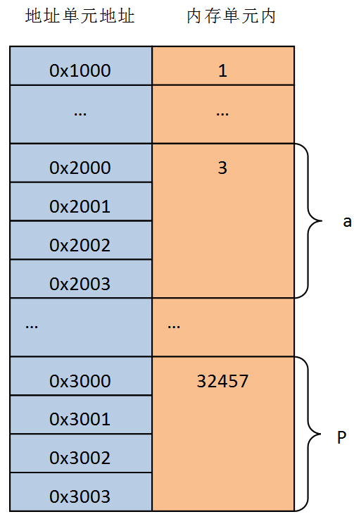
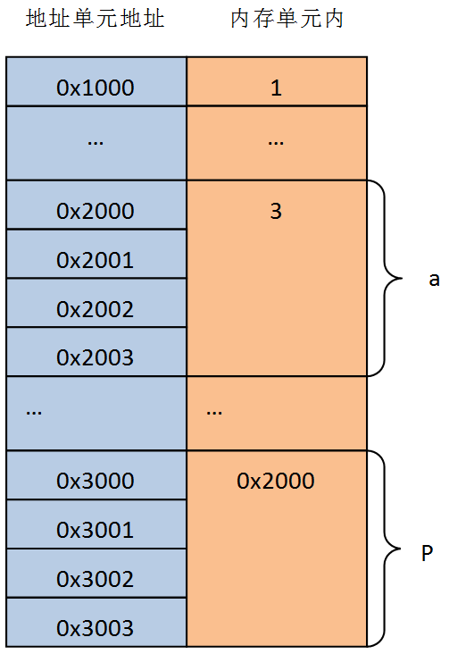
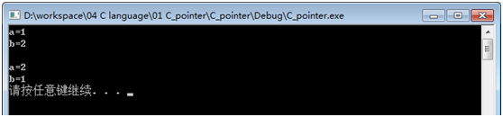

int a,b; //这是一个普通的整型变量
int *p;//这是一个整形的指针
a = 3;
b = 4;
6
printf(" a的地址：%d；\r\n", &a);
printf(" b的地址：%d；\r\n", &b);
printf(" p的地址：%d；\r\n", &p);
printf(" p的值：%d，现在p的值是不确定的，目前只是为p申请了地址，还没有为它赋值；\r\n", p);
p = &a;//取址运算/* p现在指向a */
printf(" 利用取址操作p = &a;，把a的地址赋值给p，现在p的值是%d，也就是a的地址；\r\n", p);
printf(" p的地址没有变化，p的地址仍然是%d，在这个地址上存储的是变量a的地址；\r\n", &p);
printf(" 利用*运算符得到指针p指向地址中的数值为%d，在刚才p已经指向变量a的地址了，所以指针p指向地址中的值是3，但是p的值仍然是a的地址；\r\n", *p);
b = *p;/* b现在为a的值 */
printf(" b = *p;，现在b的值就是p指向地址中的值，也就是a的值：%d;\r\n", b);
*p = 5;/* a现在为5 */
printf(" 现在利用*p为p指向地址中存储的值进行赋值：%d，这时a的值也已经改变了：%d；\r\n", *p,a);int a,b; //这是一个普通的整型变量 int *p;//这是一个整形的指针 a = 3; b = 4;
printf(" a的地址：%d；\r\n", &a);
printf(" b的地址：%d；\r\n", &b);
printf(" p的地址：%d；\r\n", &p);
printf(" p的值：%d，现在p的值是不确定的，目前只是为p申请了地址，还没有为它赋值；\r\n", p);指针p定义的时候没有进行初始化，所以在这里，p的初始值是不确定的。 当然也可以在p定义的时候赋初值，这样p的初始值就是确定的了。
p = 1;
一元运算符&可用于取一个对象的地址，如下，这时p为指向a的指针。地址运算符&只能应用于内存中的对象，即变量与数组元素。它不能作用于表达式、常量或register类型的变量。
这时p的值是3930420，即变量a的地址；
利用&取出p的地址仍然为3930396，没有变；
利用间接寻址，p可以得到指针p指向地址中的值为3，即a的值。
p = &a;//取址运算/* p现在指向a */ printf(" 利用取址操作p = &a;，把a的地址赋值给p，现在p的值是%d，也就是a的地址；\r\n", p); printf(" p的地址没有变化，p的地址仍然是%d，在这个地址上存储的是变量a的地址；\r\n", &p);
p = &a;//取址运算/* p现在指向a */
printf(" 利用取址操作p = &a;，把a的地址赋值给p，现在p的值是%d，也就是a的地址；\r\n", p);
printf(" p的地址没有变化，p的地址仍然是%d，在这个地址上存储的是变量a的地址；\r\n", &p);
printf(" 利用*运算符得到指针p指向地址中的数值为%d，在刚才p已经指向变量a的地址了，所以指针p指向地址中的值是3，但是p的值仍然是a的地址；\r\n", *p);利用*可以得到p地址中的数值，这里b的值就是3，即a的值。
b = *p;/* b现在为a的值 */
printf(" b = *p;，现在b的值就是p指向地址中的值，也就是a的值：%d;\r\n", b);对*p进行赋值后，也就是对p指针指向地址中的数值进行赋值，这是a的值也就变为了5
*p = 5;/* a现在为5 */
printf(" 现在利用*p为p指向地址中存储的值进行赋值：%d，这时a的值也已经改变了：%d；\r\n", *p,a);定义两个变量
int a=3,b; //这是一个普通的整型变量
int *p;//这是一个整形的指针定义后，a的地址是0x2000，p的地址是0x3000； 在定义的时候a赋的初始值是3，p没有赋初始值，所以p的值是不确定的。

现在进行运算：
p = &a;//取址运算/* p现在指向a */这时内存图就变成了这样，p的地址没有变化，但是p的值变化了，此时，*p=3；

在程序设计中，指针作为函数形参往往会带来意想不到的效果，下面用一个例程来讲解指针作为函数形参的特性。 例子：用一个函数交换两个变量的值：
void Swap(int x, int y)
{
int temp = 0;
temp = x;
x = y;
y = temp;
}
void Swap_pointer(int *x, int *y)
{
int temp = 0;
temp = *x;
*x = *y;
*y = temp;
}
/*
指针与函数
2019-05-09
*/
void Test2()
{
int a = 1, b = 2;
Swap(a, b);
printf("a=%d\r\n", a);
printf("b=%d\r\n", b);
Swap_pointer(&a, &b);
printf("\r\n");
printf("a=%d\r\n", a);
printf("b=%d\r\n", b);
}执行结果如下图，可以明显的看出指针作为函数形参的特性。
具体讲解详见《C语言程序设计》的5.2章节。

下面的介绍都是围绕这段函数来讲解的
/*
xutopia
*/